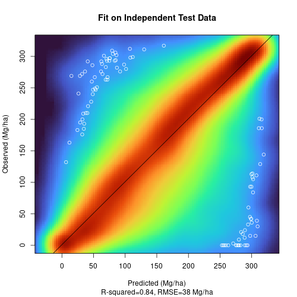

Biomass estimation for FIRE-RES WP5.6
Francesco Pirotti, Erico Kutchartt
20 December, 2022
Rationale
Biomass at European and Global scale has been estimated with several approaches.
XXX XXXX
In this approach we
Data
The following data sources are used
Dependent variables
Above Ground Biomass
We usedthe biomass from ESA Biomass Climate Change Initiative (Biomass_cci): Global datasets of forest above-ground biomass for the year 1018, version 3
- Year: 2018
- Resolution: ≈100 m (actually in degrees so depends on latitude)
- Layers:
- Above ground biomass
- Above ground biomass standard error
Independent variables
TREE SPECIES
From https://opengeohub.org/datasets
- Year: 2020
- Resolution: ≈30 m
- Layers:
- Each species has a potential and realized distribution map
- 16 available species
- veg_abies_alba_anv_v3
- veg_castanea_sativa_anv_v3
- veg_corylus_avellana_anv_v3
- veg_fagus_sylvatica_anv_v3
- veg_olea_europaea_anv_v3
- veg_picea_abies_anv_v3
- veg_pinus_halepensis_anv_v3
- veg_pinus_nigra_anv_v3
- veg_pinus_pinea_anv_v3
- veg_pinus_sylvestris_anv_v3
- veg_prunus_avium_anv_v3
- veg_quercus_cerris_anv_v3
- veg_quercus_ilex_anv_v3
- veg_quercus_robur_anv_v3
- veg_quercus_suber_anv_v3
- veg_salix_caprea_anv_v3
- 16 available species
- Each species has a potential and realized distribution map
LAND USE
- Year: 2019
- Resolution: ≈30 m (actually in degrees so depends on latitude)
- Layers:
- TBD
Independent variables:
Also referred to as “features” or “descriptors”, these are variables that are likely to be correlated, and thus help to predict, the biomass in a specific location.
In general obvious variables such as forest canopy cover fraction and tree height values are used, but also more indirect variables such as climatic variables, height above sea level, forest types etc… are used in the machine learning predictive algorithm.
COPERNICUS_Landcover_100m_Proba-V-C3_Global (REMOVED - SEE ESA WORLD COVER BELOW)
- Year: 2019
- Resolution:100 m
- Layers:
- land cover category
- forest type
- forest canopy cover %
- Note: updated to 2020 using ESA WorldCover (see next point)
ESA WorldCover
- Year: 2020
- Resolution:10 m
- Layers:
- land cover category
- forest (10)
- shrub (20)
- grassland (30)
- …
- land cover category
Resampled to 100 m using as aggregate the fraction of the three covers. So from this we have three more layers, tree fraction, shrub fraction and grass fraction in the 100 m pixel.
Canopy height from ETH
- Year: 2020
- Resolution: 10 m
- Layers were aggregated to 100 m:
- Average - canopy height_mean
- Sum - canopy height_sum
Lang, N., Jetz, W., Schindler, K., & Wegner, J. D. (2022). A high-resolution canopy height model of the Earth. arXiv preprint arXiv:2204.08322
Sentinel-2 Annual 2020 NDVI Composite
NDVI is well-known to be related to biomass values, even if the prediction efficiency decreases at higher biomass values.
- Year: 2020
- Composite of cloudless imagery with MAX NDVI value
- Resolution: 100 m
- Temporal composite - ndvi
ALOS PALSAR2 RADAR
SAR backscatter, corrected by incidence angle, is related to the amount of vegetation available in the illuminated area.
- Year: 2020
- Resolution: 25 m
- Layers were aggregated to 100 m:
- Average HV polarization - HV
Bioclimatic variables
Bioclimatic variables from WorldClim Database (Berkeley University)
- Year: 1960-1991
- Resolution: 1000 m
- Layers:
- bio01 Annual mean temperature -290 320 °C 0.1
- bio02 Mean diurnal range (mean of monthly (max temp - min temp)) 9 214 °C 0.1
- bio03 Isothermality (bio02/bio07) 7 96 % 0
- bio04 Temperature seasonality (Standard deviation * 100) 62 22721 °C 0.01
- bio05 Max temperature of warmest month -96 490 °C 0.1
- bio06 Min temperature of coldest month -573 258 °C 0.1
- bio07 Temperature annual range (bio05-bio06) 53 725 °C 0.1
- bio08 Mean temperature of wettest quarter -285 378 °C 0.1
- bio09 Mean temperature of driest quarter -521 366 °C 0.1
- bio10 Mean temperature of warmest quarter -143 383 °C 0.1
- bio11 Mean temperature of coldest quarter -521 289 °C 0.1
- bio12 Annual precipitation 0 11401 mm 0
- bio13 Precipitation of wettest month 0 2949 mm 0
- bio14 Precipitation of driest month 0 752 mm 0
- bio15 Precipitation seasonality 0 265 Coefficient of Variation 0
- bio16 Precipitation of wettest quarter 0 8019 mm 0
- bio17 Precipitation of driest quarter 0 2495 mm 0
- bio18 Precipitation of warmest quarter 0 6090 mm 0
- bio19 Precipitation of coldest quarter 0 5162 mm 0
Data pre-processing
Data collection and preparation was carried out in Google Earth Engine API called from R rgee library.
Data Coordinate Reference System harmonization
Global data are usually in geographic coordinate systems (CRS=EPSG:4326). Some data in Europe are in EPSG:3035 (Lambertian Conical Projection).
To harmonize between these two CRS the nearest neighbour resampling was applied to convert
Masking non-burnable areas
First we mask the LULC map removing non-burnable areas as per Scott and Burgan NB(1,2,3) etc…
var lulc_mask = LULC.neq(0)
.multiply(LULC.neq(40)) // agriculture (NB3)
.multiply(LULC.neq(50)) // urban (NB1)
.multiply(LULC.neq(70)) // snow and ice (NB2)
.multiply(LULC.neq(80)) // Permanent water lakes (NB8)
.multiply(LULC.neq(100)) // MOSS AND LICKEN (NB9??)
.multiply(LULC.neq(200)) // OCEAN (NB8)All data were reprojected to geographic WGS84 (EPSG:4326) coordinates with ≈100 m
≈220’000 sample points were taken from the area by stratified sampling using, as strata, the 13 LULC classes and biomass classes at 10 Mg/ha intervals, for a total of 48 biomass classes. This allowed for a balanced representation of different land use (shrub to thick forest) and of estimated biomass at pixel level.
Training AI
Biomass ground truth data are not easily reached due to the very different sampling protocols and many countries not providing the information as open data.
Some dedicated EU projects, such as GLOBIOMASS, were funded with the main goal to create biomass maps. We therefore decided to use these maps for training an ensemble of machine learning methods using as descriptors the data-rich environment from the above-listed data, for a total of 27 variables as features.
The plot below shows the relation between the variables and the biomass.

The rationale behind this decision is that the dependent variable, i.e. the AGB, is mapped with a well-documented uncertainty via the 2018 CEDA biomass map. By collecting a large number of samples from the area with stratified sampling that accounts for land-cover type and biomass class, we will augment available training data from ground samples.
The continous biomass variable values were grouped in 10 classes each of size 50 Mg/ha to provide a stratified sampling that represent evenly different biomass profiles. A total of 260’000 samples are used for training.
5-fold cross-validation on training data (Metrics computed for combined holdout predictions) provided the following performance metrics for biomass (Mg/ha):
MSE: | 1372 RMSE: | 37.1 MAE: | 24.7
Variable importance
The plots below are variable importance from the random forest and the gradient boosting methods of the ensamble pf machine learning methods.

Testing AI
Testing on an independent set of 140’000 points, sampled just like the training points (stratified the same way), provided the following performance metrics for biomass (Mg/ha):
MSE: | 1421 RMSE: | 38.7 MAE: | 25.6

Post processing
Tiles
30 km tiles were also used for smaller downloads. for this the
harmonized tiles from the project CEF Telecom project 2018-EU-IA-0095
(www.opendatascience.eu)
GeoHarmonizer
GitLAB repository here were used.


Problems and solutions
Data size
Maximum size of data tables in R is about 2 billion elements. A 100 m resolution raster of Western Europe (Spain + Portugal) as in figure below, has about 48 million cells with biomass above 0 Mg/ha. R has a limit of vector size, therefore to avoid this and to make full use of parallel processing, we divided in chunks of 10 million cells for the prediction step.
UPDATES
- 11 Dec. 2022 - migration of all code to R thanks to “rgee” library.
- 14 Dec. 2022 - convert all to CRS 4326 (geographic) with exact alignment to the CEDA Biomass 2018 map [1] that is used for training. NB the ETRS89 Lambert Azimuthal Equal Area Coordinate Reference System) [2] would allow all cells to be effectively 1 ha (100 m x 100 m), but we decided to keep a global reference frame for future developments outside Europe.
Bibliography
[1] Santoro, M.; Cartus, O. (2019): ESA Biomass Climate Change Initiative (Biomass_cci): Global datasets of forest above-ground biomass for the year 2017, v1. via Centre for Environmental Data Analysis
[2] A. Annoni et al., “Map Projections for Europe”, European Commission Joint Research Centre, reference EUR 20120 EN, 2003
[3] Spatio-Temporal Asset Catalog for European-wide layers provided by Open Environmental Data Cube Europe, co-financed under Grant Agreement Connecting Europe Facility (CEF) Telecom project 2018-EU-IA-0095 by the European Union.